공조냉동기계기사(구) (2020-06-06 기출문제)
1과목: 기계열역학
1. 다음 중 가장 큰 에너지는?
- 100kW 출력의 엔진이 10시간 동안 한 일
- 발열량 10000 kJ/kg의 연료를 100kg연소시켜 나오는 열량
- 대기압 하에서 10℃의 물 10m3를 90℃로 가열하는데 필요한 열량( 단, 물의 비열은 4.2kJ/(kgㆍK)이다.)
- 시속 100 km로 주행하는 총 질량 2000kg인 자동차의 운동에너지
(정답률: 60%)

2. 실린더 내의 공기가 100kPa, 20℃ 상태에서 300kPa이 될 때까지가역단열 과정으로 압축된다. 이 과정에서 실린더 내의 계에서 엔트로피의 변화(kJ/(kgㆍK))는? (단, 공기의 비열비(k)는 1.4이다.)
- -1.35
- 0
- 1.35
- 13.5
(정답률: 49%)
3. 용기 안에 있는 유체의 초기 내부에너지는 700kJ이다. 냉각과정 동안 250kJ의 열을 잃고, 용기내에 설치된 회전날개로 유체에 100kJ의 일을 한다. 최종상태의 유체의 내부에너지(kJ)는 얼마인가?
- 350
- 450
- 550
- 650
(정답률: 50%)
4. 열역학적 관점에서 다음 장치들에 대한 설명으로 옳은 것은?
- 노즐은 유체를 서서히 낮은 압력으로 팽창하여 속도를 감소시키는 기구이다.
- 디퓨저는 저속의 유체를 가속하는 기구이며 그 결과 유체의 압력이 증가한다.
- 터빈은 작동유체의 압력을 이용하여 열을 생성하는 회전식 기계이다.
- 압축기의 목적은 외부에서 유입된 동력을 이용하여 유체의 압력을 높이는 것이다.
(정답률: 53%)
5. 랭킨사이클에서 보일러 입구 엔탈피 192.5kJ/kg, 터빈 입구 엔탈피 3002.5kJ/kg, 응축기 입구 엔탈피 2361.8kJ/kg 일 때 열효율(%)은? (단, 펌프의 동력은 무시한다.)
- 20.3
- 22.8
- 25.7
- 29.5
(정답률: 56%)
6. 준평형 정적과정을 거치는 시스템에 대한 열전달량은? (단, 운동에너지와 위치에너지의 변화는 무시한다.)
- 0 이다.
- 이루어진 일량과 같다.
- 엔탈피 변화량과 같다.
- 내부에너지 변화량과 같다.
(정답률: 58%)
7. 초기 압력 100kPa, 초기 체적 0.1m3인 기체를 버너로 가열하여 기체 체적이 정압과정으로 0.5m3이 되었다면 이 과정 동안 시스템이 외부에 한 일(kJ)은?
- 10
- 20
- 30
- 40
(정답률: 64%)
8. 열역학 제 2법칙에 대한 설명으로 틀린 것은?
- 효율이 100%인 열기관은 얻을 수 없다.
- 제 2종의 영구 기관은 작동 물질의 종류에 따라 가능하다.
- 열은 스스로 저온의 물질에서 고온의 물질로 이동하지 않는다.
- 열기관에서 작동 물질이 일을 하게 하려면 그 보다 더 저온인 물질이 필요하다.
(정답률: 56%)
9. 공기 10kg이 압력 200kPa, 체적 5m3인 상태에서 압력 400kPa, 온도 300℃인 상태로 변한 경우 최종 체적(m3)은 얼마인가? (단, 공기의 기체상수는 0.287kJ/kgㆍK이다.)
- 10.7
- 8.3
- 6.8
- 4.1
(정답률: 54%)
10. 그림과 같은 공기표준 브레이튼(Brayton) 사이클에서 작동유체 1kg당 터빈 일(kJ/kg)은? (단, T1=300K, T2=475.1K, T3=1100K, T4=694.5K이고, 공기의 정압비열과 정적비열은 각각 1.0035kJ/(kgㆍK), 0.7165kJ/(kgㆍK)이다.)
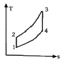
- 290
- 407
- 448
- 627
(정답률: 51%)
11. 보일러에 온도 40℃, 엔탈피 167kJ/kg인 물이 공급되어 온도 350℃, 엔탈피 3115kJ/kg인 수증기가 발생한다. 입구와 출구에서의 유속은 각각 5m/s, 50m/s이고, 공급되는 물의 양이 2000kg/h일 때, 보일러에 공급해야 할 열량(kW)은? (단, 위치에너지 변화는 무시한다.)
- 631
- 832
- 1237
- 1638
(정답률: 42%)
12. 피스톤-실린더 장치에 들어있는 100kPa, 27℃의 공기가 600kPa까지 가역단열과정으로 압축된다. 비열비가 1.4로 일정하다면 이 과정 동안에 공기가 받은 일(kJ/kg)은? (단, 공기의 기체상수는 0.287kJ/(kgㆍK)이다.)
- 263.6
- 171.8
- 143.5
- 116.9
(정답률: 46%)
13. 이상기체 1kg을 300K, 100kPa에서 500K까지 “PVn=일정”의 과정(n=1.2)을 따라 변화시켰다. 이 기체의 엔트로피 변화량(kJ/K)은? (단, 기체의 비열비는 1.3, 기체상수는 0.287kJ/(kgㆍK)이다.)
- -0.244
- -0.287
- -0.344
- -0.373
(정답률: 33%)
14. 300L 체적의 진공인 탱크가 25℃, 6MPa의 공기를 공급하는 관에 연결된다. 밸브를 열어 탱크 안의 공기 압력이 5MPa이 될 때까지 공기를 채우고 밸브를 닫았다. 이 과정이 단열이고 운동에너지와 위치에너지의 변화를 무시한다면 탱크 안의 공기의 온도(℃)는 얼마가 되는가? (단, 공기의 비열비는 1.4이다.)
- 1.5
- 25.0
- 84.4
- 144.2
(정답률: 29%)
15. 1kW의 전기히터를 이용하여 101kPa, 15℃의 공기로 차 있는 100m3의 공간을 난방하려고 한다. 이 공간은 견고하고 밀폐되어 있으며 단열되어 있다. 히터를 10분 동안 작동시킨 경우, 이 공간의 최종온도(℃)는? (단, 공기의 정적비열은 0.718kJ/kgㆍK이고, 기체상수는 0.287kJ/kgㆍK이다.)
- 18.1
- 21.8
- 25.3
- 29.4
(정답률: 40%)
16. 다음은 시스템(계)과 경계에 대한 설명이다. 옳은 내용을 모두 고른 것은?
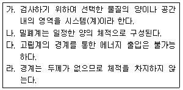
- 가, 다
- 나, 라
- 가, 다, 라
- 가, 나, 다, 라
(정답률: 50%)
17. 단열된 가스터빈의 입구 측에서 압력 2MPa, 온도 1200K인 가스가 유입되어 출구 측에서 압력 100kPa, 온도 600K로 유출된다. 5MW의 출력을 얻기 위해 가스의 질량유량(kg/s은 얼마이어야 하는가? (단, 터빈의 효율은 100%이고, 가스의 정압비열은 1.12kJ/(kgㆍK)이다.)
- 6.44
- 7.44
- 8.44
- 9.44
(정답률: 53%)
18. 펌프를 사용하여 150kPa, 26℃의 물을 가역단열과정으로 650kPa까지 변화시킨 경우 펌프의 일(kJ/kg)은? (단, 26℃의 포화액의 비체적은 0.001m3/kg이다.)
- 0.4
- 0.5
- 0.6
- 0.7
(정답률: 55%)
19. 압력 1000kPa, 온도 300℃ 상태의 수증기(엔탈피 3⑤1.15 kJ/kg, 엔트로피 7.1228kJ/kgㆍK)가 증기터빈으로 들어가서 100kPa 상태로 나온다. 터빈의 출력 일이 370kJ/kg 일 때 터빈의 효율(%)은?
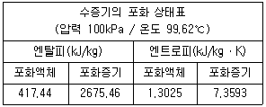
- 15.6
- 33.2
- 66.8
- 79.8
(정답률: 34%)
20. 이상적인 냉동사이클에서 응축기 온도가 30℃, 증발기 온도가 -10℃일 때 성적 계수는?
- 4.6
- 5.2
- 6.6
- 7.5
(정답률: 62%)
2과목: 냉동공학
21. 스크류 압축기의 운전 중 로터에 오일을 분사 시켜주는 목적으로 가장 거리가 먼 것은?
- 높은 압축비를 허용하면서 토출온도 유지
- 압축효율 증대로 전력소비 증가
- 로터의 마모를 줄여 장기간 성능유지
- 높은 압축비에서도 체적효율 유지
(정답률: 66%)
22. 그림은 냉동사이클을 압력-엔탈피선도에 나타낸 것이다. 이 그림에 대한 설명으로 옳은 것은?
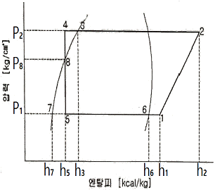
- 팽창밸브 출구의 냉매 건조도는 [(h5-h7)/(h6-h7)]로 계산한다.
- 증발기 출구에서의 냉매 과열도는 엔탈피차 (h1-h6)로 계산한다.
- 응축기 출구에서의 냉매 과냉각도는 엔탈피차 (h3-h5)로 계산한다.
- 냉매순환량은 [냉동능력/(h6-h5)]로 계산한다.
(정답률: 48%)
23. 최근 에너지를 효율적으로 사용하자는 측면에서 빙축열시스템이 보급되고 있다. 빙축열시스템의 분류에 대한 조합으로 적절하지 않은 것은?
- 정적 제빙형 - 관외착빙형
- 정적 제빙형 - 빙박리형
- 동적 제빙형 - 리키드아이스형
- 동적 제빙형 - 과냉각아이스형
(정답률: 50%)
24. 냉동장치의 운전에 관한 설명으로 옳은 것은?
- 압축기에 액백(liquid back)현상이 일어나면 토출가스 온도가 내려가고 구동 전동기의 전류계 지시 값이 변동한다.
- 수액기내에 냉매액을 충만시키면 증발기에서 열부하 감소에 대응하기 쉽다.
- 냉매 충전량이 부족하면 증발압력이 높게 되어 냉동능력이 저하한다.
- 냉동부하에 비해 과대한 용량의 압축기를 사용하면 저압이 높게 되고, 장치의 성적계수는 상승한다.
(정답률: 38%)
25. 다음의 역카르노 사이클에서 등온팽창과정을 나타내는 것은?
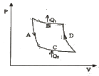
- A
- B
- C
- D
(정답률: 54%)
26. 증기압축 냉동사이클에서 압축기의 압축일은 5HP이고, 응축기의 용량은 12.86kW이다. 이 때 냉동사이클의 냉동능력(RT)은?
- 1.8
- 2.6
- 3.1
- 3.5
(정답률: 42%)
27. 다음과 같은 카르노사이클에 대한 설명으로 옳은 것은?
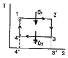
- 면적 1-2-3‘-4’는 흡열 Q1을 나타낸다.
- 면적 4-3-3‘-4’는 유효열량을 나타낸다.
- 면적 1-2-3-4는 방열 Q2를 나타낸다.
- Q1, Q2는 면적과는 무관하다.
(정답률: 58%)
28. 비열이 3.86kJ/kgㆍK인 액 920kg을 1시간 동안 25℃에서 5℃로 냉각시키는데 소요되는 냉각열량은 몇 냉동톤(RT)인가? (단, 1RT는 3.5kW이다.)
- 3.2
- 5.6
- 7.8
- 8.3
(정답률: 59%)
29. 1분간에 25℃의 물 100L를 0℃의 물로 냉각시키기 위하여 최소 몇 냉동톤의 냉동기가 필요한가?
- 45.2RT
- 4.52RT
- 452RT
- 42.5RT
(정답률: 53%)
30. 흡수식 냉동기에 사용하는 흡수제의 구비조건으로 틀린 것은?
- 농도 변화에 의한 증기압의 변화가클 것
- 용액의 증기압이 낮을 것
- 점도가 높지 않을 것
- 부식성이 없을 것
(정답률: 67%)
31. 쉘 앤 튜브 응축기에서 냉각수 입구 및 출구 온도가 각각 16℃와 22℃, 냉매의 응축온도를 25℃라 할 때, 이 응축기의 냉매와 냉각수와의 대수평균온도차(℃)는?
- 3.5
- 5.5
- 6.8
- 9.2
(정답률: 56%)
32. 실제 냉동사이클에서 압축과정 동안 냉매 변환 중 스크류 냉동기는 어떤 압축과정에 가장 가까운가?
- 단열 압축
- 등온 압축
- 등적 압축
- 과열 압축
(정답률: 46%)
33. 암모니아 냉동기의 배관재료로서 적절하지 않은 것은?
- 배관용 탄소강 강관
- 동합금관
- 압력배관용 탄소강 강관
- 스테인리스 강관
(정답률: 65%)
34. 냉동기유의 구비조건으로 틀린 것은?
- 응고점이 높아 저온에서도 유동성이 있을 것
- 냉매나 수분, 공기 등이 쉽게 용해되지 않을 것
- 쉽게 산화하거나 열화하지 않을 것
- 적당한 점도를 가질 것
(정답률: 57%)
35. 그림과 같은 냉동 사이클로 작동하는 압축기가 있다. 이 압축기의 체적효율이 0.65, 압축효율이 0.8, 기계효율이 0.9라고 한다면 실제 성적계수는?
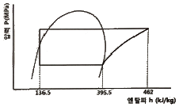
- 3.89
- 2.81
- 1.82
- 1.42
(정답률: 38%)
36. 증발기의 종류에 대한 설명으로 옳은 것은?
- 대형 냉동기에서는 주로 직접 팽창식 증발기를 사용한다.
- 직접 팽창식 증발기는 2차 냉매를 냉각시켜 물체를 냉동, 냉각시키는 방식이다.
- 만액식 증발기는 팽창밸브에서 교축팽창 된 냉매를 직접 증발기로 공급하는 방식이다.
- 간접 팽창식 증발기는 제빙, 양조 등의 산업용 냉동기에 주로 사용된다.
(정답률: 48%)
37. 2단 압축 1단 팽창식과 2단 압축 2단 팽창식의 비교 설명으로 옳은 것은? (단, 동일운전 조건으로 가정한다.)
- 2단 팽창식의 경우에는 두 가지의 냉매를 사용한다.
- 2단 팽창식의 경우가 성적계수가 약간 높다.
- 2단 팽창식은 중간냉각기를 필요로 하지 않는다.
- 1단 팽창식의 팽창밸브는 1개가 좋다.
(정답률: 53%)
38. 운전 중인 냉동장치의 저압측 진공게이지가 50cmHg을 나타내고 있다. 이때의 진공도는?
- 65.8%
- 40.8%
- 26.5%
- 3.4%
(정답률: 55%)
39. 안전밸브의 시험방법에서 약간의 기포가 발생할 때의 압력을 무엇이라고 하는가?
- 분출 전개압력
- 분출 개시압력
- 분출 정지압력
- 분출 종료압력
(정답률: 59%)
40. 응축압력의 이상 고압에 대한 원인으로 가장 거리가 먼 것은?
- 응축기의 냉각관 오염
- 불응축가스 혼입
- 응축부하 증대
- 냉매 부족
(정답률: 56%)
3과목: 공기조화
41. 단일덕트 방식에 대한 설명으로 틀린 것은?
- 중앙기계실에 설치한 공기조화기에서 조화한 공기를 주 덕트를 통해 각 실로 분배한다.
- 단일덕트 일정 풍량 방식은 개별제어에 적합하다.
- 단일덕트 방식에서는 큰 덕트 스페이스를 필요로 한다.
- 단일덕트 일정 풍량 방식에서는 재열을 필요로 할 때도 있다.
(정답률: 55%)
42. 내벽 열전달율 4.7W/m2ㆍK, 외벽 열전달율 5.8W/m2ㆍK, 열전도율 2.9W/mㆍ℃, 벽두께 25cm, 외기온도 -10℃, 실내온도 20℃일 때 열관류율(W/m2ㆍK)은?
- 1.8
- 2.1
- 3.6
- 5.2
(정답률: 57%)
43. 변풍량 유닛의 종류별 특징에 대한 설명으로 틀린 것은?
- 바이패스형 덕트 내의 정압변동이 거의 없고 발생 소음이 작다.
- 유인형은 실내 발생열을 온열원으로 이용 가능하다.
- 교축형은 압력손실이 작고 동력절감이 가능하다.
- 바이패스형은 압력손실이 작지만 송풍기 동력 절감이 어렵다.
(정답률: 33%)
44. 냉방부하의 종류에 따라 연관되는 열의 종류로 틀린 것은?
- 인체의 발생열 - 현열, 잠열
- 극간풍에 의한 열량 - 현열, 잠열
- 조명부하 - 현열, 잠열
- 외기 도입량 - 현열, 잠열
(정답률: 58%)
45. 습공기의 습도에 대한 설명으로 틀린 것은?
- 절대습도는 건공기 중에 포함된 수증기량을 나타낸다.
- 수증기 분압은 절대습도에 반비례 관계가 있다.
- 상대습도는 습공기의 수증기 분압과 포화공기의 수증기 분압과의 비로 나타낸다.
- 비교습도는 습공기의 절대습도와 포화공기의 절대습도와의 비로 나타낸다.
(정답률: 57%)
46. 공기의 온도에 따른 밀도 특성을 이용한 방식으로 실내보다 낮은 온도의 신선공기를 해당구역에 공급함으로써 오염물질을 대류효과에 의해 실내 상부에 설치된 배기구를 통해 배출시켜 환기 목적을 달성하는 방식은?
- 기계식 환기법
- 전반 환기법
- 치환 환기법
- 국소 환기법
(정답률: 68%)
47. 아래 그림에 나타낸 장치를 표의 조건으로 냉방운전을 할 때 A실에 필요한 송풍량(m3/h)은? (단, A실의 냉방부하는 현열부하 8.8kW, 잠열부하 2.8kW이고, 공기의 정압비열은 1.01kJ/kgㆍK, 밀도는 1.2kg/m3이며, 덕트에서의 열손실은 무시한다.)
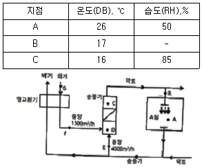
- 924
- 1847
- 2904
- 3831
(정답률: 42%)
48. 다음 중 증기난방 장치의 구성으로 가장 거리가 먼 것은?
- 트랩
- 감압밸브
- 응축수탱크
- 팽창탱크
(정답률: 51%)
49. 환기에 따른 공기조화부하의 절감 대책으로 틀린 것은?
- 예냉, 예열시 외기도입을 차단한다.
- 열 발생원이 집중되어 있는 경우 국소배기를 채용한다.
- 전열교환기를 채용한다.
- 실내 정화를 위해 환기횟수를 증가시킨다.
(정답률: 58%)
50. 온수난방에 대한 설명으로 틀린 것은?
- 저온수 난방에서 공급수의 온도는 100℃이하이다.
- 사람이 상주하는 주택에서는 복사난방을 주로 한다.
- 고온수 난방의 경우 밀폐식 팽창탱크를 사용한다.
- 2관식 역환수 방식에서는 펌프에 가까운 방열기일수록 온수 순환량이 많아진다.
(정답률: 38%)
51. 방열기에서 상당방열면적(EDR)은 아래의 식으로 나타낸다. 이 중 Qo는 무엇을 뜻하는가? (단, 사용단위로 Q는 W, Qo는 W/m2이다.)
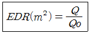
- 증발량
- 응축수량
- 방열기의 전방열량
- 방열기의 표준방열량
(정답률: 68%)
52. 공조기 냉수코일 설계 기준으로 틀린 것은?
- 공기류와 수류의 방향은 역류가 되도록 한다.
- 대수평균온도차는 가능한 한 작게 한다.
- 코일을 통과하는 공기의 전면풍속은 2~3m/s로 한다.
- 코일의 설치는 관이 수평으로 놓이게 한다.
(정답률: 57%)
53. 공기세정기의 구성품인 엘리미네이터의 주된 기능은?
- 미립화 된 물과 공기와의 접촉 촉진
- 균일한 공기 흐름 유도
- 공기 내부의 먼지 제거
- 공기 중의 물방울 제거
(정답률: 56%)
54. 다음 중 열수분비(μ)와 현열비(SHF)와의 관계식으로 옳은 것은? (단, qS는 현열량, qL는 잠열량, L은 가습량이다.)
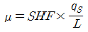
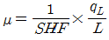
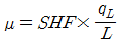
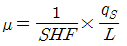
(정답률: 43%)
55. 대류 및 복사에 의한 열전달률에 의해 기온과 평균복사온도를 가중평균한 값으로 복사난방 공간의 열환경을 평가하기 위한 지표를 나타내는 것은?
- 작용온도(Operative Temperature)
- 건구온도(Drybulb Teperature)
- 카타냉각력(Kata Cooling Power)
- 불쾌지수(Discomfort Index)
(정답률: 60%)
56. A, B 두 방의 열손실은 각각 4kW이다. 높이 600mm인 주철제 5세주 방열기를 사용하여 실내온도를 모두 18.5℃로 유지시키고자 한다. A실은 102℃의 증기를 사용하며, B실은 평균 80℃의 온수를 사용할 때 두 방 전체에 필요한 총 방열기의 절수는? (단, 표준방열량을 적용하며, 방열기 1절(節)의 상당 방열 면적은 0.23m2이다.)
- 23개
- 34개
- 42개
- 56개
(정답률: 23%)
57. 실내를 항상 급기용 송풍기를 이용하여 정압(+)상태로 유지할 수 있어서 오염된 공기의 침입을 방지하고, 연소용 공기가 필요한 보일러실, 반도체 무균실, 소규모 변절실, 창고 등에 적용하기에 적합한 환기법은?
- 제1종 환기
- 제2종 환기
- 제3종 환기
- 제4종 환기
(정답률: 63%)
58. 전공기방식에 대한 설명으로 틀린 것은?
- 송풍량이 충분하여 실내오염이 적다.
- 환기용 팬을 설치하면 외기냉방이 가능하다.
- 실내에 노출되는 기기가 없어 마감이 깨끗하다.
- 천장의 여유 공간이 작을 때 적합하다.
(정답률: 57%)
59. 건구온도 30℃, 습구온도 27℃일 때 불쾌지수(DI)는 얼마인가?
- 57
- 62
- 77
- 82
(정답률: 27%)
60. 송풍기의 법칙에 따라 송풍기 날개 직경이 D1일 때, 소요동력이 L1인 송풍기를 직경 D2로 크게 했을 때 소요동력 L2를 구하는 공식으로 옳은 것은? (단, 회전속도는 일정하다.)
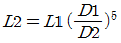
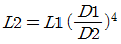
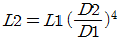
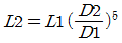
(정답률: 63%)
4과목: 전기제어공학
61. 다음 신호흐름도에서
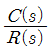
는?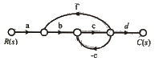
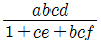
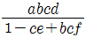
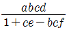
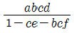
(정답률: 47%)
62. 코일에 흐르고 있는 전류가 5배로 되면 축적되는 에너지는 몇 배가 되는가?
- 10
- 15
- 20
- 25
(정답률: 64%)
63. 역률 0.85, 선전류 50A, 유효전력 28kW인 평형 3상 △부하의 전압(V)은 약 얼마인가?
- 300
- 380
- 476
- 660
(정답률: 46%)
64. 탄성식 압력계에 해당되는 것은?
- 경사관식
- 압전기식
- 환상평형식
- 벨로스식
(정답률: 63%)
65. 맥동률이 가장 큰 정류회로는?
- 3상 전파
- 3상 반파
- 단상 전파
- 단상 반파
(정답률: 36%)
66. 다음 블록선도의 전달함수는?
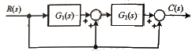
- G1(s)G2(s)+G2(s)+1
- G1(s)G2(s)+1
- G1(s)G2(s)+G2
- G1(s)G2(s)+G1+1
(정답률: 43%)
67. 다음중 간략화한 논리식이 다른 것은?
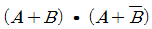
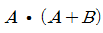
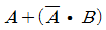
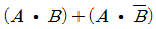
(정답률: 50%)
68. 논리식
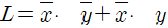
를 간단히 한 식은?- L=x
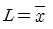
- L=y
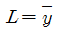
(정답률: 57%)
69. 물체의 위치, 방향 및 자세 등의 기계적 변위를 제어량으로 해석 목표값의 임의의 변화에 추종하도록 구성된 제어계는?
- 프로그램제어
- 프로세스제어
- 서보 기구
- 자동 조정
(정답률: 60%)
70. 단자전압 Vab는 몇 V인가?
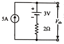
- 3
- 7
- 10
- 13
(정답률: 35%)
71. 전자석의 흡인력은 자속밀도 B(Wb/m2)와 어떤 관계에 있는가?
- B에 비례
- B1.5에 비례
- B2에 비례
- B3에 비례
(정답률: 45%)
72. 피드백 제어의 특징에 대한 설명으로 틀린 것은?
- 외란에 대한 영향을 줄일 수 있다.
- 목표값과 출력을 비교한다.
- 조절부와 조작부로 구성된 제어요소를 가지고 있다.
- 입력과 출력의 비를 나타내는 전체 이득이 증가한다.
(정답률: 55%)
73. 다음 회로와 같이 외전압계법을 통해 측정한 전력(W)은? (단, Ri: 전류계의 내부저항, Re: 전압계의 내부저항이다.)
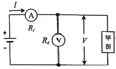
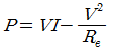
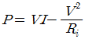
- P=VI-2ReI
- P=VI-2RiI
(정답률: 43%)
74. 목표값 이외의 외부 입력으로 제어량을 변화시키며 인위적으로 제어할 수 없는 요소는?
- 제어동작신호
- 조작량
- 외란
- 오차
(정답률: 56%)
75. 2전력계법으로 3상 전력을 측정할 때 전력계의 지시가 W1=200W, W2=200W이다. 부하전력(W)은?
- 200
- 400
- 200√3
- 400√3
(정답률: 34%)
76. R=10Ω, L=10mH에 가변콘덴서 C를 직렬로 구성시킨 회로에 교류주파수 1000Hz를 가하여 직렬공진을 시켰다면 가변콘덴서는 약 몇 ㎌인가?
- 2.533
- 12.675
- 25.35
- 126.75
(정답률: 21%)
77. 스위치 S의 개폐에 관계없이 전류 I가 항상 30A라면 R3와 R4는 각각 몇 Ω인가?
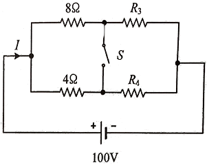
- R3=1, R4=3
- R3=2, R4=1
- R3=3, R4=2
- R3=4, R4=4
(정답률: 54%)
78. 아래 R-L-C 직렬회로의 합성 임피던스(Ω)는?
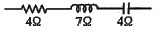
- 1
- 5
- 7
- 15
(정답률: 37%)
79. 변압기의 효율이 가장 좋을 때의 조건은?
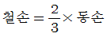
- 철손=2×동손
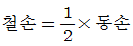
- 철손=동손
(정답률: 48%)
80. 입력 신호가 모두 “1”일 때만 출력이 생성되는 논리회로는?
- AND 회로
- OR 회로
- NOR 회로
- NOT 회로
(정답률: 64%)
5과목: 배관일반
81. 펌프 흡입측 수평배관에서 관경을 바꿀 때 편심 레듀서를 사용하는 목적은?
- 유속을 빠르게 하기 위하여
- 펌프 압력을 높이기 위하여
- 역류 발생을 방지하기 위하여
- 공기가 고이는 것을 방지하기 위하여
(정답률: 51%)
82. 다음 중 배관의 중심이동이나 구부러짐 등의 변위를 흡수하기 위한 이음이 아닌 것은?
- 슬리브형 이음
- 플렉시블 이음
- 루프형 이음
- 플라스탄 이음
(정답률: 58%)
83. 온수배관 시공 시 유의사항으로 틀린 것은?
- 일반적으로 팽창관에는 밸브를 설치하지 않는다.
- 배관의 최저부에는 배수 밸브를 설치한다.
- 공기밸브는 순환펌프의 흡입측에 부착한다.
- 수평관은 팽창탱크를 향하여 올림구배로 배관한다.
(정답률: 43%)
84. 다음 중 밸브몸통 내에 밸브대를 축으로 하여 원판형태의 디스크가 회전함에 따라 개폐하는 밸브는 무엇인가?
- 버터플라이 밸브
- 슬루스밸브
- 앵글밸브
- 볼밸브
(정답률: 52%)
85. 강관의 나사이음 시 관을 절단한 후 관 단면의 안쪽에 생기는 거스러미를 제거할 때 사용하는 공구는?
- 파이프 바이스
- 파이프 리머
- 파이프 렌치
- 파이프 커터
(정답률: 71%)
86. 옥상탱크에서 오버플로관을 설치하는 가장 적합한 위치는?
- 배수관보다 하위에 설치한다.
- 양수관보다 상위에 설치한다.
- 급수관과 수평위치에 설치한다.
- 양수관과 동일 수평위치에 설치한다.
(정답률: 54%)
87. 하트포드(Hart ford) 배관법에 관한 설명으로 틀린 것은?
- 보일러 내의 안전 저수면 보다 높은 위치에 환수관을 접속한다.
- 저압증기 난방에서 보일러 주변의 배관에 사용한다.
- 하트포드 배관법은 보일러 내의 수면이 안전수위 이하로 유지하기 위해 사용된다.
- 하트포드 배관 접속 시 환수주관에 침적된 찌꺼기의 보일러 유입을 방지할 수 있다.
(정답률: 47%)
88. 급수급탕설비에서 탱크류에 대한 누수의 유무를 조사하기 위한 시험방법으로 가장 적절한 것은?
- 수압시험
- 만수시험
- 통수시험
- 잔류염소의 측정
(정답률: 47%)
89. 중앙식 급탕법에 대한 설명으로 틀린 것은?
- 탱크 속에 직접 증기를 분사하여 물을 가열하는 기수 혼합식의 경우 소음이 많아 증기관에 소음기(silencer)를 설치한다.
- 열원으로 비교적 가격이 저렴한 석탄, 중유등을 사용하므로 연료비가 적게 든다.
- 급탕설비를 다른 설비 기계류와 동일한 장소에 설치하므로 관리가 용이하다.
- 저탕 탱크속에 가열 코일을 설치하고, 여기에 증기보일러를 통해 증기를 공급하여 탱크 안의 물을 직접 가열하는 방식을 직접 가열식 중앙 급탕법이라 한다.
(정답률: 49%)
90. 공기조화 설비에서 에어워셔의 플러딩 노즐이 하는 역할은?
- 공기 중에 포함된 수분을 제거한다.
- 입구공기의 난류를 정류로 만든다.
- 엘리미네이터에 부착된 먼지를 제거한다.
- 출구에 섞여 나가는 비산수를 제거한다.
(정답률: 58%)
91. 다음 공조용 배관 중 배관 샤프트 내에서 단열시공을 하지 않는 배관은?
- 온수관
- 냉수관
- 증기관
- 냉각수관
(정답률: 60%)
92. 급수온도 5℃, 급탕온도 60℃, 가열전 급탕설비의 전수량은 2m3, 급수와 급탕의 압력차는 50kPa일 때, 절대압력 300kPa의 정수두가 걸리는 위치에 설치하는 밀폐식 팽창탱크의 용량(m3)은? (단, 팽창탱크의 초기 봉입 절대압력은 300kPa이고, 5℃일 때 밀도는 1000kg/m3, 60℃일 때 밀도는 983.1kg/m3이다.)
- 0.83
- 0.57
- 0.24
- 0.17
(정답률: 20%)
93. 배관재료에 대한 설명으로 틀린 것은?
- 배관용 탄소강 강관은 1MPa이상, 10MPa 이하 증기관에 적합하다.
- 주철관은 용도에 따라 수도용, 배수용, 가스용, 광산용으로 구분한다.
- 연관은 화학 공업용으로 사용되는 1종관과 일반용으로 쓰이는 2종관, 가스용으로 사용되는 3종관이 있다.
- 동관은 관 두께에 따라 K형, L형, M형으로 구분한다.
(정답률: 47%)
94. 다음 중 증기난방용 방열기를 열손실이 가장 많은 창문 쪽의 벽면에 설치할 때 벽면과의 거리로 가장 적절한 것은?
- 5~6cm
- 10~11cm
- 19~20cm
- 25~26cm
(정답률: 56%)
95. 저ㆍ중압의 공기 가열기, 열교환기등 다량의 응축수를 처리하는데 사용되며, 작동원리에 따라 다량트랩, 부자형 트랩으로 구분하는 트랩은?
- 바이메탈 트랩
- 벨로즈 트랩
- 플로트 트랩
- 벨 트랩
(정답률: 45%)
96. 냉동장치에서 압축기의 표시방법으로 틀린 것은?
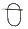
: 밀폐형 일반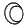
: 로터리형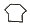
: 원심형- : 왕복동형
(정답률: 68%)
97. 공조배관설비에서 수격작용의 방지방법으로 틀린 것은?
- 관 내의 유속을 낮게 한다.
- 밸브는 펌프 흡입구 가까이 설치하고 제어한다.
- 펌프에 플라이휠(fly wheel)을 설치한다.
- 서지탱크를 설치한다.
(정답률: 58%)
98. 압축공기 배관설비에 대한 설명으로 틀린 것은?
- 분리기는 윤활유를 공기나 가스에서 분리시켜 제거하는 장치로서 보통 중각냉각기와 후부냉각기 사이에 설치한다.
- 위험성 가스가 체류되어 있는 압축기실은 밀폐시킨다.
- 맥동을 완화하기 위하여 공기탱크를 장치한다.
- 가스관, 냉각수관 및 공기탱크 등에 안전밸브를 설치한다.
(정답률: 51%)
99. 프레온 냉동기에서 압축기로부터 응축기에 이르는 배관의 설치 시 유의사항으로 틀린 것은?
- 배관이 합류할 때는 T자형보다 Y자형으로 하는 것이 좋다.
- 압축기로부터 올라온 토출관이 응축기에 연결되는 수평부분은 응축기 쪽으로 하향구배로 배관한다.
- 2대의 압축기가 아래쪽에 있고 1대의 응축기가 위쪽에 있는 경우 토출가스 헤더는 압축기 위에 배관하여 토출가스관에 연결한다.
- 압축기와 응축기가 각각 2대이고 압축기가 응축기의 하부에 설치된 경우 압축기의 크랭크 케이스 균압관은 수평으로 배관한다.
(정답률: 31%)
100. 수도 직결시 급수방식에서 건물 내에 급수를 할 경우 수도 본관에서의 최저 필요압력을 구하기 위한 필요 요소가 아닌 것은?
- 수도 본관에서 최고 높이에 해당하는 수전까지의 관 재질에 따른 저항
- 수도 본관에서 최고 높이에 해당하는 수전이나 기구별 소요압력
- 수도 본관에서 최고 높이에 해당하는 수전까지의 관내 마찰손실수두
- 수도 본관에서 최고 높이에 해당하는 수전까지의 상당압력
(정답률: 40%)